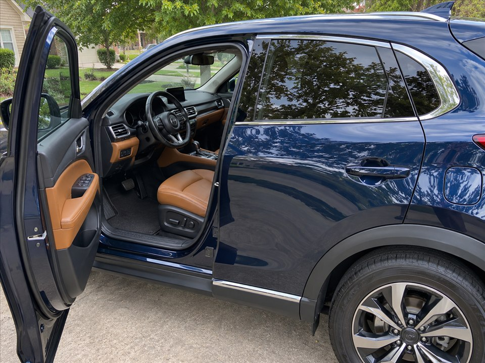

Full mobile car detailing starting at $229. Midwest Full Reset combines interior and exterior cleaning at your Johnson County home.
What the Full Reset brings together
The Midwest Full Reset starts at $229 and combines everything in the Cabin Refresh interior detail and Fresh Finish exterior detail. It includes deep cleaning for carpets and mats, extended interior detailing and an exterior paint protection topper. Choose it when both the cabin and exterior need attention in the same visit.
Inside the vehicle
Complete interior and crevice vacuuming is followed by carpet and floor mat cleaning, interior surface cleaning and attention to the door panels, dashboard and center console. Interior glass, mirrors, air vents and tight spaces are included. Let us know about spills, embedded debris and pet hair so the estimate reflects the work needed.
Outside the vehicle
A foam bath and hand wash are paired with wheel and tire cleaning, tire conditioning, exterior glass cleaning and hydrophobic paint protection. The service is for cleaning and protection; it does not promise scratch removal, paint correction or restoration of damaged finishes.
Set aside enough time for your vehicle
A complete detail requires more time than an exterior-only appointment. Vehicle condition and extras can change how long it takes, so share photos of heavily soiled areas and avoid scheduling around a tight departure deadline. Heavy Stain Removal is an additional $40; Ceramic Wax is an additional $20. Heavy pet hair is priced after inspection. Provide water and power access at your Johnson County service address, and pay after the detail is complete.
Questions about this service
Should I book interior or complete?
Choose interior if the cabin is your priority. Choose complete when you also want the foam bath, hand wash, wheel and tire cleaning, glass and exterior protection.
Ready for a cleaner car?
Check the live calendar or text your vehicle details and photos for a quote. Serving Johnson County, Kansas. Water and power access required.